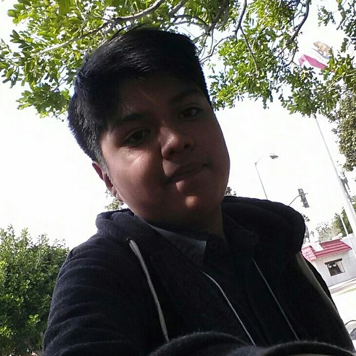

My name is Jared Diaz and I am currently a junior attending Pasadena High School. I am a tutor volunteer at LACF (Lake Ave Community Foundation) I help students with their academic work. We also spend time with them to improve in areas when their teachers ask for improvement such as reading or math. I'm a bilingual student. I speak english and spanish fluently. I'm also a quick learner. I enjoy spending time with friends. I also enjoy relaxing at home while playing videogames. Time to time I like to take a walk with my family. I like helping others when possible.
